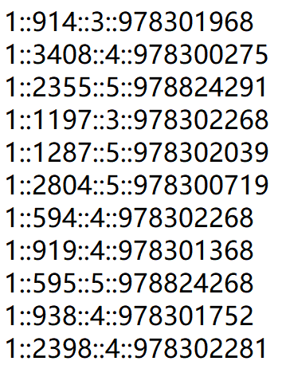
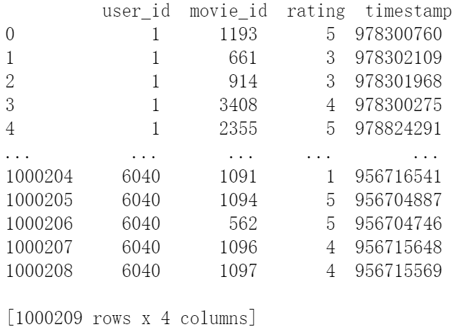
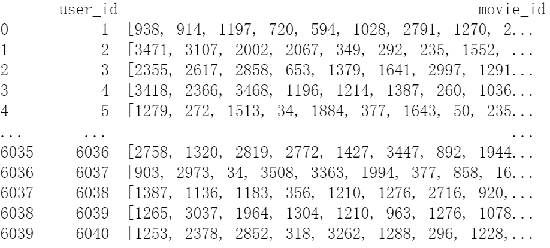
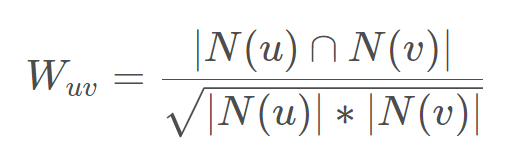

用Python实现协同过滤算法
本文分享两种经典协同过滤算法的Python实现：
- 基于物品的协同过滤算法
- 基于用户的协同过滤算法
代码来自Github开源项目：fun-rec.
在开始之前，先导入用到的库：
1 | import pandas as pd |
数据准备
本次使用的数据是一份电影评分数据：

::将数据集划分成4列，从左到右分别代表：用户id，电影id，评分值，时间戳。
首先将原始数据转换成pandas的数据框表示：

然后提取每个用户评价过的电影，格式如下：

稍后的ItemCF和UserCF都将使用这个表。
数据处理完整代码如下：
1 | def get_data(root_path): |
定义评价指标
定义一些指标来评估推荐算法的好坏，直接上代码：
1 | # 评价指标 |
ItemCF
基于物品的协同过滤算法，根据物品之间的相似度进行推荐。
通俗来讲就是看看与当前用户交互(这里的交互可以是评分，购买等行为)过的物品相似的物品(且这些物品不曾与当前用户交互过)都有哪些，然后拿过来给用户做推荐。
具体步骤如下：
1.建立user->item的倒排表trn_user_items，它存储了每一个用户交互过的物品的集合，格式如下：
trn_user_items={user_id1: [item_id1, item_id2,…,item_idn], user_id2: …}
2.计算物品之间的相似度：
遍历每一个user交互过的items列表，统计两个不同的item共同被user(不止一个，而是trn_user_items中的所有user)交互的总次数，以及每个物品总共被交互(评分)的次数，据此计算两个物品之间的余弦相似度；
将两两物品之间的相似度统计结果存入sim，格式如下：
sim = {item_id1: {item_id２: num1, item_id3: num3,…}, item_id３: {item_id４: num２,…}, …}.比如{ item_id３: {item_id４: num２} 意味着id=3的物品与id=4的物品之间的相似度得分是num2.
3.根据2.中得到的物品之间的相似度，获取与当前测试用户交互过的物品最相似的前K个物品，然后对这K个用户交互的物品中除当前测试用户训练集中交互过的物品以外的物品计算最终的相似度分数，存入items_rank：
items_rank={user1:{item1:score1,item2:score2,…},user2:{item6:score6,item9:score9,…}}
4.只取items_rank中得分前N的物品，将其作为最终的推荐结果。
注意，这里的余弦相似度的计算公式是离散的，物品$u$和物品$v$之间的余弦相似度$W_{uv}$计算公式如下：

$N(u)$和$N(v)$分别表示物品$u$和物品$v$被交互(评分)的总次数，分子表示物品$u$和物品$v$同时被用户交互(评分)的总次数（用户一般不止一个）。
ItemCF的完整代码如下：
1 | def Item_CF(trn_user_items, val_user_items, K, N): |
UserCF
基于用户的协同过滤算法，根据用户之间的相似度进行推荐。
通俗来讲就是看看与当前用户相似的其他用户交互(这里的交互可以是评分，购买等行为)过的物品(且这些物品不曾与当前用户交互过)都有哪些，然后拿过来给用户做推荐。
具体步骤如下：
1.建立item->user的倒排表item_users，它存储了每一个与某物品交互过的用户的集合，格式如下：
item_users={item_id1: {user_id1, user_id2, … , user_idn}, item_id2: …}
2.计算用户之间的相似度：
遍历每一个item交互过的users列表，统计两个不同的user与相同item(不止一个，而是item_users中的所有item)交互的总次数，以及每个用户的总交互(评分)次数，据此计算两个用户之间的余弦相似度；
将两两用户之间的相似度统计结果存入sim，格式如下：
sim = {user_id1: {user_id2: num1，user_id5: num5,…}, user_id3:{user_id4: num2,…}, …}比如 user_id3:{user_id4: num2,}意味着id=3的用户与id=4的用户之间的相似度得分是num2.
3.根据2.中得到的用户之间的相似度，获取与当前测试用户最相似的前K个用户，然后对这K个用户交互的物品中除当前测试用户训练集中交互过的物品以外的物品计算最终的相似度分数，存入items_rank：
items_rank={user1:{item1:score1,item2:score2,…},user2:{item6:score6,item9:score9,…}}
4.只取items_rank中得分前N的物品，将其作为最终的推荐结果。
UserCF的完整代码如下：
1 | def User_CF_Rec(trn_user_items, val_user_items, K, N): |
参考：